Introduction
Dusk is a well-balanced keyboard layout for columnar keyboard with thumb keys.
The most impressive feat that Dusk achieves is that it is remarkably low in
- SFS
- SFB
- 2u SFS
- Scissors
while maintaining a reasonable redirection and LSB. As such, Dusk is consistent and a good general-purpose thumb layout.
Fun Fact
-
Duskoriginally was namedClockon 04/14/2024 because I did not think it was worth anything. -
Duskhad 2 versions:DuskandDusk_rollwith vowel thumbR, andDusk_rollwas removed after having 5 likes on Cmini in favor ofDusk, which had no likes at that point.
Side Note
No idea what LSB, SFS, or SFB means? Check out terminology!
Layout
Dusk
- On my keyboard Piantor,
Ris slightly to the right of what's shown here.

ACSII
b f d p q j ' o u .
n s t c y m h a e i
z v k g w x l _ / ,
r
Dusk-qvz
It's made to address concern over V.
This variant has similar stats but with even lower scissor at the expense of having left index do more work and higher 2u SFS from g_v.
-
The higher 2u SFS can further be addressed by swapping
PG, butNGandG_Tbecome slightly worse. -
Or you can swap
WV, but make sure you are okay with typingknow.

ACSII
b f d p v j ' o u .
n s t c y m h a e i
q z k g w x l _ / ,
r
Motivation
As a Canary (ortho) user for 14 months and reached about 140 wpm on MonkeyType, its flaws - high SFS and high index workload - start to bother me.
== Canary-ortho ==
w l y p b z f o u '
c r s t g m n e i a
q j v d k x h / , .
In particular, I don't vibe with:
B_Dand all theKinteraction withB__K(.back()) andP__K(pack) leading to 2u/2.24u SFS.- That feeling that left index is flying all over the place at high speed.
- High SFS.
LV,SYS,RL,WR,CL.
Don't get me wrong - Canary-ortho is a decent layout - but I just hope for something better. I decided to try other modern layouts such as Graphite, Gallium, Kuntum, Stronk, and several others, but none of it speaks to me the way that Canary does.
Additionally, my keyboard Piantor Pro is a split columnar keyboard with an aggressive pinky stagger and 3 thumb keys on each side, and most popular keyboard layouts were designed for conventional rowstag keyboards.
Eventually, after making several different layouts and not finding the one, I realized what I am looking for may not be possible without having a letter on the thumb key. I started to expriment with thumb Y, I, S, and finally landing on thumb R - Dusk.
Design
Goals
Dusk was designed with these goals in mind:
- Roll over Alternation
- Low scissors
- Low 2u SFS (including some fast
X__Y) - Low SFS
- Low SFB
- Low finger speed
- Low usage for pinky and ring bottom keys
- No finger gets overworked
Low SFS takes slight priority over low SFB with respect to a ratio, and low 2u SFS and scissors, including half scissors, take priority over both SFS and SFB.
Vowel Block
I decided to go with the popular vowel block
~ ~ ~ ~ ~ ~ ~ O U .
~ ~ ~ ~ ~ ~ ~ A E I
~ ~ ~ ~ ~ ~ ~ ~ / ,
~
as it as commonly agreed upon to be the most balanced vowel block choice.
Having I alone on the pinky for the .I, stack.
Why vowel block? because vowels don't go well with most letters, but they go relatively well with each other.
Feel free to swap ., if you prefer that way.
Consonants
LHM
To avoid RL SFB, I decided to put R on a thumb key (as opposed to the RN stack as seen in Kuntum). L doesn't really go well with any other letter except for H and M, but L_M and M_L are both somewhat common, which leads to LHM stack having high 2u SFS if its on a non-index column, so LHM goes to index with M taking the inner spot, just like in Canary. If you are more bothered by LSB than 2u SFS, it would be wise to move M to the top.
~ ~ ~ ~ ~ ~ ~ O U .
~ ~ ~ ~ ~ M H A E I
~ ~ ~ ~ ~ ~ L ~ / ,
R
DTK
T index commonly leads to high SFS in my experience playing around with layouts for the past few months, so I settled on DTK stack, which is a good load for the middle finger to handle.
~ ~ D ~ ~ ~ ~ O U .
~ ~ T ~ ~ M H A E I
~ ~ K ~ ~ ~ L ~ / ,
R
BNZ
I like the idea of having N on the pinky because they tend to be quite non-offensive with low redirection and scissors especially now that R is gone (usually N pinky layouts end up with BR scissor like in Graphite and Gallium).
N doesn't interact with B much and with a low-usage key Z, BNZ goes to pinky.
B ~ D ~ ~ ~ ~ O U .
N ~ T ~ ~ M H A E I
Z ~ K ~ ~ ~ L ~ / ,
R
FSV
ST in-roll sounds like a good idea and S doesn't have good letters to partner, so I decided on FSV stack for the ring finger.
B F D ~ ~ ~ ~ O U .
N S T ~ ~ M H A E I
Z V K ~ ~ ~ L ~ / ,
R
Wait a minute!
You may think, "wait a minute! but that creates NV and DV scissors!". Yes, I hear you, so there is another variant dusk-vqz that addresses this concern.
What's the trade-off?
Pros:
- no
NVscissor (involve) - no
DVscissor (advice) - no
b_vskip scissor (above) - no
f_v2u SFS (favorite)
Cons:
w_v2u SFS (however)g_v2.23u SFS (give)rvandv_rmay be weird for some (serviceandvery).- 6 keys to look after for left index.
PCGWY
Y is yet another problematic letter as it creates CY, PY, GY SFBS and W_Y is common enough that I'd like WY to be 1u apart.
I decided on
B F D P ~ ~ ~ O U .
N S T C Y M H A E I
Z V K G W ~ L ~ / ,
R
because:
- I want
NGto be a nice roll and a goodG_T(-ing,-ght,get,got). Cis usually more common, so it is on the homerow.Yis there for the ease of altingCY,PY,YPand (optionally)GY.Wis underYbecauseW_Yis common, in addition toYWSFB. It is not aboveYbecauseW_T,W__T,W__K,TWandWRall feel awful. I am okay withP_WorW_P2.5u SFS as they are rare.Ptakes the last good spot and createsPYandYPalts.
QJX
Jgoes well with vowel inner top spot becauseJUaccounts for most ofJappearances.Xdoes not go well withCandP(excel,expect), so it goes to vowel inner bottom spot.Qtakes the last remaining index spot at consonants side.
B F D P Q J ~ O U .
N S T C Y M H A E I
Z V K G W X L ~ / ,
R
Quote Symbol '
Other layouts commonly have OA' stack on the middle finger, but after using other layouts that have this stack, I've come to dislike it. Here is why:
You'feels like 2u SFB even if it is 2u SFS. For me,ouis a roll, so my middle finger tends to not leave for'until afteruhas been typed.don'tandwon'tfeel just awful with how common they are.- Additionally,
a_'is common too (that's,can't,what's).
For the aforemetioned reasons, I decided to go with
B F D P Q J ' O U .
N S T C Y M H A E I
Z V K G W X L ~ / ,
R
with the intention to alt 'm and 'll, both of which are doable for my columnar keyboard. If you do not want to do 'll alt, I think it is still preferable over OA' stack. (I do not believe 'll alt is feasible on rowstag keyboard).
It does create h_' SFS, but it is about as common as a_'.
Alternative 1
Embrace the OA' stack like the layout below shows - all the pros and cons have been explained above.
You may want to swap J~.
B F D P Q J ~ O U .
N S T C Y M H A E I
Z V K G W X L ' / ,
R
Alternative 2
Swap QJ'.
Keep in mind that it creates
Y'SFB (They')W_'SFS (We')DN'redirection (don't)C__'SFS (can't)
It results in roughly the same SFB and SFS on either SHAI or Monkeyracer, but it increases redirection by 0.58% on Monkeyracer corpus according to Cmini.
B F D P ' Q J O U .
N S T C Y M H A E I
Z V K G W X L ~ / ,
R
The Last Spot
It's free real estate. I decided to put underscore _ there because I code in C++ and Rust often. You can put ; there if you'd like, or anything really.
B F D P Q J ' O U .
N S T C Y M H A E I
Z V K G W X L _ / ,
R
Statistics
- Heatmap
- Oxeylyzer
- Genkey
- Krillyzer
- Keysolve
- Cmini
- a200
- Cyanophage
- 2U SFS
- Finger Usage
- SFS Finger Distribution (Cmini)
- SFBS Finger Distribution (Cmini)
Heatmap

Oxeylyzer
- No thumb key support
- Highest finger speed is on right ring at 0.769

Genkey
- No thumb key support
- Highest finger speed is on right index at 1.59

Krillyzer
- Krillyzer is mainly used for analyzing SFS and SFBS distance
- SFS distance at 1.149
- SFB distance at 1.337

Keysolve
- It only support right thumb key, so it needs to be mirrored.
- I mainly look at HSB, HSS, FSB, and FSS here.

Cmini
dusk
b f d p q j ' o u .
n s t c y m h a e i
z v k g w x l _ / ,
r
MONKEYRACER:
Alt: 28.22%
Rol: 47.95% (In/Out: 20.92% | 27.02%)
One: 1.75% (In/Out: 0.74% | 1.02%)
Rtl: 49.70% (In/Out: 21.66% | 28.04%)
Red: 3.32% (Bad: 0.32%)
SFB: 0.38%
SFS: 3.77% (Red/Alt: 1.07% | 2.70%)
LH/RH: 46.90% | 53.10%
a200
- Right thumb space setting

Cyanophage
- Its finger usage doesn't include the thumb
Ror space. - It was speculated that its SFS include space, so it is much lower than other tools.

2U SFS
-
Cyanophage's tool is one of the only tools that show 2u SFS.
-
If you alt
'll, the actually number is 0.10%. -
There is the hidden
P__G(mostly-pingas inhoping) andK__D(kind), but they are not that common.

Finger Usage
-
Duskis right-hand heavy. -
If you are of the belief that thumb shouldn't count, then its
L:R = 38.81:54.76 = 41.48:58.52, which is about as imbalanced asCanary-orthoat42.24:57.76. -
If you are of the belief that thumb should count, then it is even worse than
41.48:58.52because space is by far the most common letter (more thanE).
dusk (usage)
b f d p q j ' o u .
n s t c y m h a e i
z v k g w x l _ / ,
r
MONKEYRACER:
LI: 10.21% RI: 13.35%
LM: 12.02% RM: 15.25%
LR: 8.05% RR: 16.58%
LP: 8.53% RP: 9.58%
LT: 6.44%
Total: 100.00%
SFS Finger Distribution (Cmini)
-
The total 3.98% is actually a more accurate number than the Cmini stat above due to some lower/upper case conversion issues in Cmini.
-
No finger gets over 1%.
-
Right index taking the most load at 0.98%, but it really only handles
HLMas the other 3 keys are low frequency.
dusk (sfs)
b f d p q j ' o u .
n s t c y m h a e i
z v k g w x l _ / ,
r
MONKEYRACER:
LI: 0.63% RI: 0.98%
LM: 0.45% RM: 0.54%
LR: 0.25% RR: 0.64%
LP: 0.13% RP: 0.37%
LT: 0.00%
Total: 3.98%
SFBS Finger Distribution (Cmini)
-
The total 0.48% is actually a more accurate number than the Cmini stat above due to some lower/upper case conversion issues in Cmini.
-
No finger gets over 0.20%
-
The majority of SFB for right index is attributed by
'm, which is designed to be alted ('ltoo).
dusk (sfb)
b f d p q j ' o u .
n s t c y m h a e i
z v k g w x l _ / ,
r
MONKEYRACER:
LI: 0.09% RI: 0.16%
LM: 0.01% RM: 0.07%
LR: 0.02% RR: 0.13%
LP: 0.01% RP: 0.00%
Total: 0.48%
My Thoughts
11 Days In
I have been using Dusk for 11 days (as of 04/27/2024) and I am currently typing this documetation with it. I am about 60 WPM on MonkeyType E200 tests now and 50 WPM on E10k test (both 2-min tests and with 99% accuracy).
With my current typing speed, I have yet to observe any glaring issues with it.
I rarely feel any SFB or SFS at all thanks to Dusk's impressive stats, and the major grip that other people have: LSB and W position don't bother me at all.
Additionally, I like the fact that it has almost all the common shortcuts on my left hand:
CTRL-C, CTRL-V, CTRL-Z, CTRL-W, CTRL-D. The only regrettable thing is CTRL-X being 2 hands.
When it comes to vim, I am editing this documentation with Helix and I think it is usable. I got used to using Canary-ortho on Neovim and Helix, and I don't see how Dusk is worse than Canary-ortho when it comes to vim motion.
But of course, no layout is perfect, despite its impressive stats, Dusk isn't without its own problems. The below I list out all the minor annoyances I have noticed while using Dusk.
Nickpicking
All frequency below are obtained from Cmini with SHAI corpus
with the command !cmini examples <pattern>. Only those >= 0.010% are documented.
The bad just means that I do not like them, but they may not have been considered as scissor with the conventional definition.
BAD means worse than just bad.
| Pattern | Example | Classification | Frequency |
|---|---|---|---|
w_p | swap | 2.236u SFS | 0.010% |
p_w | power | 2.236u SFS | 0.059% |
k_d | asked | 2u Middle SFS | 0.152% |
f_v | five | 2u Ring SFS | 0.054% |
p__g | shipping | 2u Index SFS | 0.184% |
k__d | kind | 2u Middle SFS | 0.052% |
o, | also, | Pinky-ring bad | 0.082% |
nf | info | Pinky-ring bad | 0.193% |
e, | me, | Pinky-ring bad | 0.545% |
ui | quite | Pinky-ring bad | 0.355% |
iu | medium | Pinky-ring bad | 0.021% |
u, | you, | Pinky-ring BAD | 0.045% |
bs | jobs | Pinky-ring HSB | 0.109% |
nv | involve | Pinky-ring HSB | 0.162% |
e. | me. | Pinky-ring HSB | 0.655% |
b_v | above | Pinky-ring FSS | 0.029% |
dv | advice | Middle-ring FSB | 0.075% |
k_p | skip | Middle-Index FSS | 0.022% |
ox | box | Middle-Index bad | 0.047% |
dw | hardware | Middle-Index bad | 0.021% |
wd | powder | Middle-Index bad | 0.011% |
SUM | Sum of all above | 2.883% |
The long list above seems daunting, but is actually a vast improvement over Canary-ortho.
Side Notes
If you'd like a keyboard layout without any flaw, you should look into magic keyboard layouts in which there exists a magic key that does your custom commands based on surrounding inputs.
It may be possible to make Dusk a magic layout, but I am personally not into magic layouts.
Dusk vs. Canary-ortho
Scissors (Keysolve):
- 1.27% less HSB at 2.10%
- 1.13% less HSS at 5.20%
- 0.08% less FSB at 0.02%
- 0.45% less FSS at 0.13%
2u SFS (Cyanophage):
- 0.04% less 2u SFS at 0.11%
It doesn't take the hidden ones like v__y, b__k, and p__k in Canary-ortho into account (very, back, park).
Various info (Oxeylyzer):
- 0.342 less SFB at 0.527%
- 3.019 less SFS at 4.950%
- 1.882 less finger speed at 4.189
- 0.354 less LSB at 2.179%
Quotes (Cmini with Monkeyracer corpus):
- 0.58% less SFB at 0.38%
- 3.86% less SFS at 3.77%
- 0.03% more redirection at 3.32%
Closing
Overall, I believe Dusk is an improvement over Canary-ortho in a lot of ways and I am happy with how it turns out.
FAQ
- Compare Canary to Dusk is not fair!
- I hate where ' is!
- I hate where
Vis! - Why not swap 2 index block?
- Why not swap
XandZfor lower SFB and SFS? - How much worse is vowel thumb space and can I use thumb R with vowel thumb?
- What is the True SFB if I alt and slide?
- I despise alting, can I re-arrange index letters?
- Can I use
Duskon a rowstag keyboard? - Is Dusk good for e200 on MonkeyType?
- I don't care about half scissor, I hate inner
Wposition, and I want the best stats - How did you make the figures in Layout?
Compare Canary to Dusk is not fair!
Yes, I agree, but I used to main Canary-ortho, it makes sense for me to compare them.
Feel free to compare Dusk against other thumb layouts such as Pine-y, Sturdy-thumbn, Aptmak, Bunya, or Chrono.
Chrono (another layout of mine) beats Dusk for having even lower SFS, low LSB, and no inner corner key like W in Dusk, but in exchange getting LK ring-middle full scissor, RL SFB, and BR scissor.
chrono
b l d p z q w o u .
n r t h y g c a e i
x j k f v ' m ; / ,
s
MONKEYRACER:
Alt: 30.72%
Rol: 44.80% (In/Out: 26.31% | 18.49%)
One: 1.95% (In/Out: 0.71% | 1.24%)
Rtl: 46.75% (In/Out: 27.02% | 19.73%)
Red: 3.67% (Bad: 0.38%)
SFB: 0.53%
SFS: 3.67% (Red/Alt: 0.98% | 2.69%)
LH/RH: 49.94% | 50.06%
I hate where ' is!
I hate where V is!
Fair concern - use Dusk-qvwz.
Why not swap 2 index block?
- It increases alternation by a whopping 4% to 32.XX% on Cmini with Monkeyracer corpus, which is too high for my taste.
OWandWOwould suck. I consider that scissors. SwappingWandQwon't help because thenWAwould suck.- The intended
CY,YC,PY,YPalts would be less feasible. Think words likehappyorprivacy.
Why not swap X and Z for lower SFB and SFS?
F_Xis a skip full pinky-ring scissor (fix).B_Xis a 2u pinky SFS (unboxing).XPis a bit awkward (expect).- At the end of the day, stats isn't everything. Comfort should come first.
How much worse is vowel thumb space and can I use thumb R with vowel thumb?
It is commonly known that space should be pressed with the consonant thumb because it has lower redirection and higher roll, and so why is the thumb R in Dusk on the consonant side?
The reason is simple - thanks to a200 analyzer, I've come to the conclusion that even after considering the extra 0.52% redirection incurred by vowel space thumb, having R on the consonant thumb as opposed to the vowel thumb leads to approximately 3.87% lower redirection overall.
But then you may wonder: Is the redirection caused by thumb even real? How come that I have not felt any space redirection?
For me at least, after having tried Dusk with vowel thumb R for a few days, most redirection involving R is just as good, if not better than, the redirection involving index finger, but with one exception: when index L is also involved. Take the word earlier for example, that word just feels bad to type with vowel thumb R.
What is the True SFB if I alt and slide?
If you
- Alt
PY,YP,CY,'M, and'L. - Slide
UE,OA,HL,YW, andFS.
then SFB is almost none, leaving really only GY, LM, I., and I,. None of which is common (unless you type almost a lot).
I despise alting, can I re-arrange index letters?
Yes - arrange them how you like them!
Can I use Dusk on a rowstag keyboard?
It is possible to do so with wide mod, but Dusk is designed for colstag keyboards, so I can't say the experience would be good. You may or may not want to re-arrange some index keys.
Is Dusk good for e200 on MonkeyType?
It is :D
It doesn't have any SFB (0.00%) on e200 and with remarkably low SFS as well.
dusk
b f d p q j ' o u .
n s t c y m h a e i
z v k g w x l _ / ,
r
ENGLISH-200:
Alt: 30.73%
Rol: 50.11% (In/Out: 21.60% | 28.51%)
One: 1.34% (In/Out: 0.67% | 0.67%)
Rtl: 51.45% (In/Out: 22.27% | 29.18%)
Red: 3.79% (Bad: 0.22%)
SFB: 0.00%
SFS: 3.34% (Red/Alt: 1.56% | 1.78%)
LH/RH: 47.04% | 52.96%
I don't care about half scissor, I hate inner W position, and I want the best stats
You may be interested in Dusk_optimized.
Pinky s is commonly known for having the best stats and it stands true here. However,
Dusk_optimized has way more (1.41%) half scissors than Dusk according to Keysolve.
Dusk_optimized was created out of curiousity because I did not design Dusk to have the best stats and yet it comes out with extremely low stats. It got me wonder how much lower can SFB and SFS go if I solely optimize for them.
dusk_optimized
f p d w q j ' o u .
s n t c y m h a e i
z b k g v x l _ / ,
r
MONKEYRACER:
Alt: 28.31%
Rol: 47.97% (In/Out: 20.42% | 27.55%)
One: 1.67% (In/Out: 0.63% | 1.04%)
Rtl: 49.64% (In/Out: 21.06% | 28.58%)
Red: 3.42% (Bad: 0.39%)
SFB: 0.36%
SFS: 3.68% (Red/Alt: 1.07% | 2.62%)
LH/RH: 46.90% | 53.10%
How did you make the figures in Layout?
It is from here with the following setting:
layout:
qmk_keyboard: chocofi
#qmk_layout: LAYOUT_split_3x5_2
layers:
DEF:
- [B, F, D, P, W, J, "'", O, U, .]
- [N, S, T, C, Y, M, H, A, E, I]
- [Q, Z, K, G, V, X, L, "_", /, ","]
- {}
- {t: R}
- {}
- {}
- {t: Space}
- {}
Terminology
-
Same Finger Bigram (SFB): Pressing two keys with the same finger in conjunction.
-
Same Finger Skipgram (SFS): Pressing two keys with the same finger, but separated by x letters (1 keypress).
-
Disjointed Same Finger Bigram (dSFB): Synonym for SFS. Not used as much anymore.
-
Lateral Stretch Bigram (LSB): A bigram where your hand must stretch laterally, as in using the middle finger following middle column usage on the same hand. An example is
beon QWERTY. -
Alt-fingering: Pressing a key with a different finger than would be typed with traditional touch typing technique.
-
Alternation: Pressing a key with the opposite hand than you typed the last.
-
Roll: Typing two or more keys with the same hand, moving in the same "direction". For example, on QWERTY,
sdfwould be a roll, butsfdwould not. -
Inward/Outward Roll: A roll which goes in a particular direction. Inward means towards the center of the keyboard, like
dfon QWERTY. Outward means away from the center, likefdon QWERTY. Many people, but not all, consider inward rolls to be more comfortable than outward rolls. -
Redirect/Redirection: A one-handed sequence of at least three letters that 'changes directions'. For example, on QWERTY,
sfdwould be a redirect, butsdfwould not. -
Hand Balance: How much work each hand does for a layout. For example, a 35%:65% hand balance would mean that the left hand types 35% of keys, and the right hand types 65%.
-
Scissor: A vague concept that generally refers to fingers curling or extending in awkward relations to other fingers on the same hand. QWERTY
cwandexare usually considered significant examples of scissors. -
Half-Scissor Bigram (HSB): A half-scissor is a pattern where one finger needs to stretch or contract to press a key on the top or bottom row and another finger on the same hand stays on the homerow - but the finger that is on the lower of the two rows is either middle or ring.
ok,sc, andrdare common examples of half-scissors on QWERTY. -
Full-Scissor Bigram (FSB): A full-scissor is a pattern where one finger needs to reach to the top row and another finger on the same hand needs to contract to hit the bottom row - but the finger that is on the lower of two rows is either middle or ring.
cr,ex,xtare all FSBs on QWERTY. -
Half-Scissor Skipgram (HSS): Similar to
HSBexcept it is separated by 1 keypress from another finger. -
Full-Scissor Skipgram (FSS): Similar to
FSBexcept it is separated by 1 keypress from another finger. -
Lateral Stretch Skipgram (LSS): Similar to
LSBexcept it is separated by 1 keypress from another finger. -
Onehand (ONE): A onehand is when all three keypresses are pressed on the same hand, and in an order from left to right or right to left.
asd,sdf, andfdsare all onehands on QWERTY.